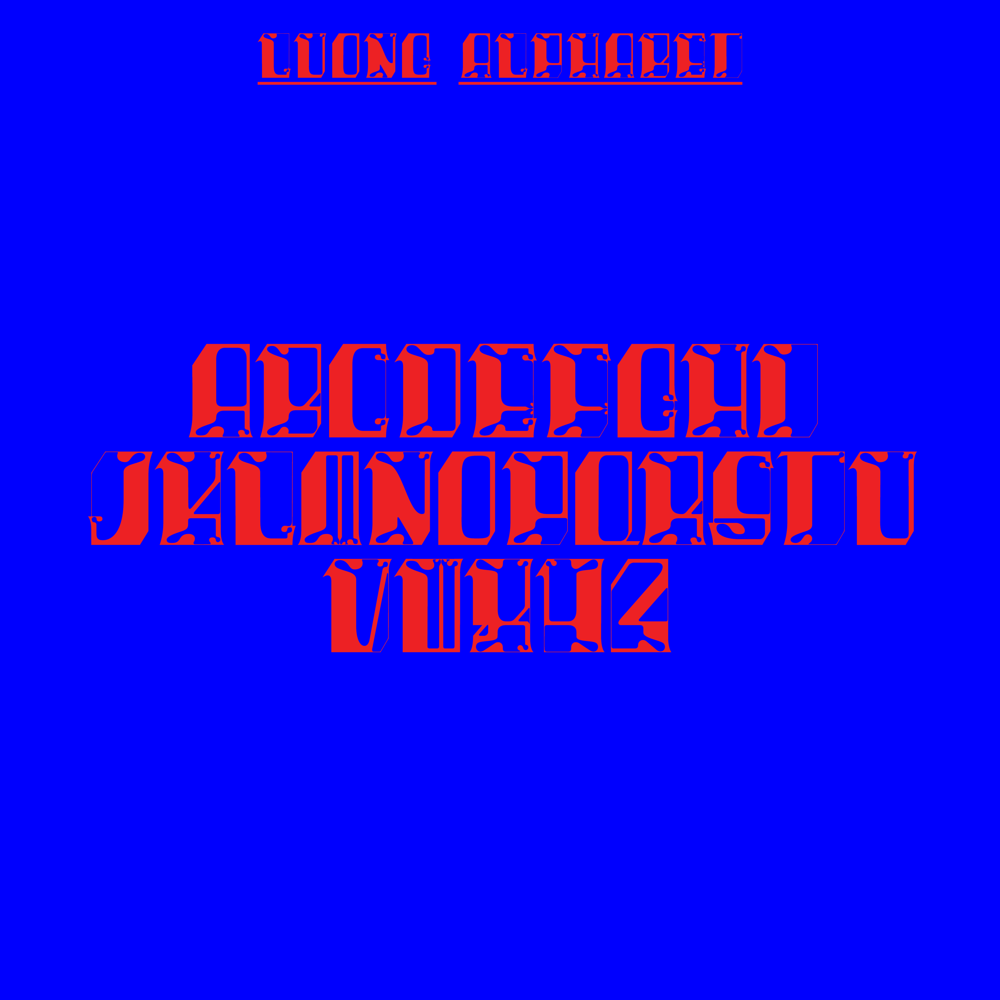

LUONG
LUONG, my first typeface. A bare bones font with wack-ass tracking, and wack-ass letterforms.
Does it hurt to look? Good. Based on a speculative world, if I wasn’t adopted. Traumatized from the lack of a family, a lack of love. Surviving for only myself. Tough on the outside, traumatized within.
Does it hurt to look? Good. Based on a speculative world, if I wasn’t adopted. Traumatized from the lack of a family, a lack of love. Surviving for only myself. Tough on the outside, traumatized within.

